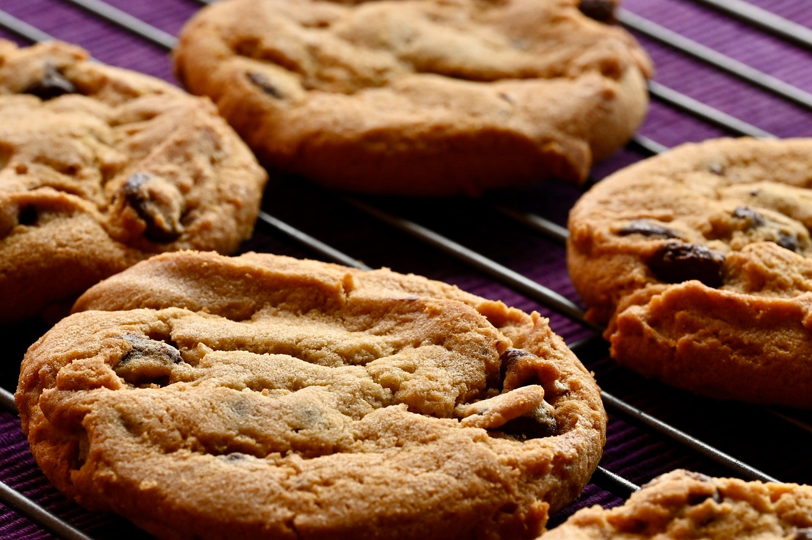

Chocolate Chip Cookie Recipe!
Learn all about them in 3 minutes!

Source
History
Who made Chocolate Chip Cookies?
The first chocolate chip cookie recipe was created in the 1930s by American chef Ruth Wakefield.
She was known for running the "Toll House" restaurant in Whitman, Massachusetts. Chocolate chip
cookies became an addition to her cookbook named "Tried and True" in 1938, when the recipe was
revealed to the public. The cookbook gained a large amount of traction. In 1939, her recipe was
so popular that she signed her recipe and her restaurant to Nestle. Chocolate chip cookies were
the result of testing & developing a recipe.
Description
Whats in chocolate chip cookies?
Chocolate chip cookies are sweet baked treats that can hold a variety of ingredients in them.
This can range from the most signifigant addition, chocolate chips, to unusual ingredients, like bacon!
Chocolate chip cookie dough's essential ingredients can include things like eggs, butter, sugar, flour, and baking soda.
Recipies vary from different places in the world & different recipes. Chocolate chip cookies have many variations, for example,
double chocolate cookies & sugar cookies. For this recipe, we will need...
Ingedients:
- 2 LargeEggs
- 1 Cup Salted Butter
- 1 Cup White sugar
- 1 Cup Brown sugar
- 3 Cups All Purpose Flour
- 1/2 Teaspoon Baking Powder
- 1 Teaspoon Baking Soda
- 2 Teaspoons Pure Vanilla extract
- 1 TeaspoonSalt
- 2 Cups Chocolate Chips/Chunks
Recipe:
- Preheat oven to 375 degrees F. Line a baking pan with parchment paper and set aside.
- In a seperate bowl mix flour, baking soda, salt, and baking powder. Set aside.
- Cream together butter and sugars until combined.
- Beat in eggs and vanilla until fluffy.
- Mix in the dry ingredients until combined.
- Add 12 oz package of chocolate chips and mix well.
- Roll 2-3 TBS (depending on how large you like your cookies) of dough at a time into balls and place them evenly spaced on your prepared cookie sheets. (alternately, use a small cookie scoop to make your cookies.)
- Bake in preheated oven for approximately 8-10 minutes. Take them out when they are just BARELY starting to turn brown.
- Let them sit on the baking pan for 2 minutes before removing to cooling rack.
- Let them cool for 5-10 minutes and enjoy!
Sources:
Source 1
Source 2